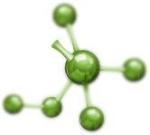
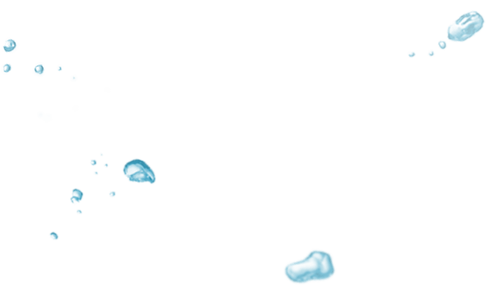

NikoStop Antistress
Gotas para dejar fácilmente de fumar
- Liberación completa de fumar durante 1 curso
- Sin estrés, ira e irritación
- Incluso para los fumadores
NO FUMAR
Empieza una vida libre desde ahora!
¿Porque Nikostop es mejor que otros productos?
Comparación de la eficacia de este producto contra el habito de fumar
Los productos convencionales de fumar y sustituyentes de nicotina NO ayudan a una persona a hacer frente al estrés y las molestias que se producen al dejar de fumar.
A diferencia de los medios convencionales, que no ayudan a dejar de fumar, NikoStop Antistréss resuelve el problema de incomodidad en el 1er curso
Pedir

- 
-

- 
¿Que hace a NikoStop
así de efectivo?
-
Vitaminas B1, B3, B6Proporcionan una óptima actividad del sistema nervioso, elimina el síndrome del hábito de fumar, mejoran la función cerebral, curan al cuerpo.
-
EspinoPreviene el envejecimiento de los vasos, mejora la circulación sanguínea, normaliza el corazón y el cerebro, tiene un efecto calmante sobre el sistema nervioso, cura todo el organismo.
-
TriptófanoUn aminoácido esencial, un secreto químico de alegría. Proporciona un buen estado de ánimo, tranquilo, sano y la calidad del sueño.
-
ToronjilPerfectamente ayuda contra el estrés, nerviosismo y la depresión causada por la ausencia de nicotina, mejora la memoria y la concentración.
-
LavandaUn potente adaptógeno, hace que sea fácil acostumbrarse a la vida sin cigarrillos. Limpia el cuerpo de toxinas. Protege de los cambios de humor, aumenta la concentración y la eficiencia.
¿Que efecto yo recibiré de
NikoStop Antistress?
- La eliminación de los síntomas del hábito de fumar
- La purificación del organismo de la nicotina y el alquitrán
- Aumentar la eficiencia, enfoque de la concentración
- Sueño saludable y la recuperación del organismo
- Asegura un nuevo hábito de no fumar
 Pedir
Pedir
Los expertos lo recomiendan

Empieza una vida libre desde ahora!
Adicción a la nicotina requiere un enfoque integral y altamente individual.
Muy a menudo un tratamiento puramente farmacéutico no es suficiente. Ya que el cigarrillo está integrado en la vida de la persona. El tabaquismo se asocia a la persona con cosas agradables de su vida: descanso, entretenimiento, sexo. Y cuando sale el hábito de fumar de la vida de la persona, se va también la alegría.
Es por eso que recomiendo a mis pacientes las gotas NikoStop. Gracias a los óptimos componentes, el proceso de liberación y la formación de nuevas conexiones neuronales son indolorosas y cómodas.
Los síntomas de abstinencia cuando se tomas las gotas NikoStop son prácticamente ningunos. Es por eso que se lo recomiendo a todos mis pacientes.
Los síntomas de abstinencia cuando se tomas las gotas NikoStop son prácticamente ningunos. Es por eso que se lo recomiendo a todos mis pacientes.
DetallesManuel Ramirez Experto principal del Centro Internacional para el tratamiento de la dependencia del tabaco
Comentarios sobre Nikostop
Otros prometen —
Nosotros damos garantia

Estamos seguros en la calidad de nuestro producto! Y no nos dispersaremos con promesas vacías. Si dentro de 30 días las gotas NikoStop no les ayuda, se le regresa el dinero.
Detalles acerca de las condiciones de devolución
NikoStop Antistress
Gotas para dejar fácilmente de fumar
- Liberación completa de fumar durante 1 curso
- Sin estrés, ira e irritación
- Incluso para los fumadores más ávidos